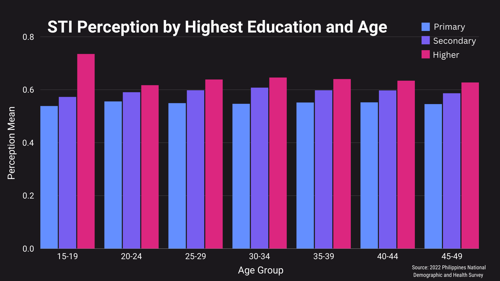

Nutshell Graph
The nutshell graph illustrates the mean perception of sexually transmitted infections (STIs) among different
age groups, separated by their highest educational attainment, based on data from the 2022 Philippines
National Demographic and Health Survey. The y-axis represents the average perception level (ranging from 0.0 to 0.8),
while the x-axis categorizes the respondents into age groups: 15-19, 20-24, 25-29, 30-34, 35-39, 40-44, and 45-49 years old.
The bars are color-coded to indicate the educational levels: blue for primary, purple for secondary, and pink for
higher education. Across all age groups, individuals with higher education exhibit the highest perception mean,
indicating a better understanding or awareness of STIs. Specifically, those with higher education consistently score
higher than 0.6. In contrast, individuals with primary education have the lowest perception means, typically
around 0.50 to 0.55, while those with secondary education fall in between, generally ranging from 0.55 to 0.6.
The data suggests a strong correlation between educational attainment and STI awareness, with higher education
leading to greater awareness. This trend is consistent across all age groups, though there is minimal deviation
within each educational category among different age groups. Overall, the graph highlights the vital role of
education in enhancing STI awareness.